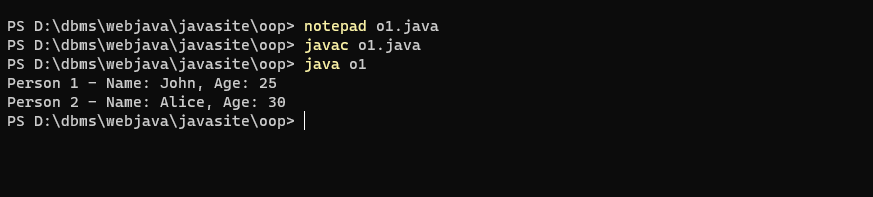
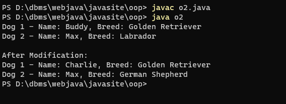
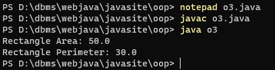
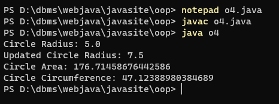
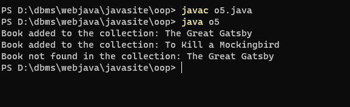
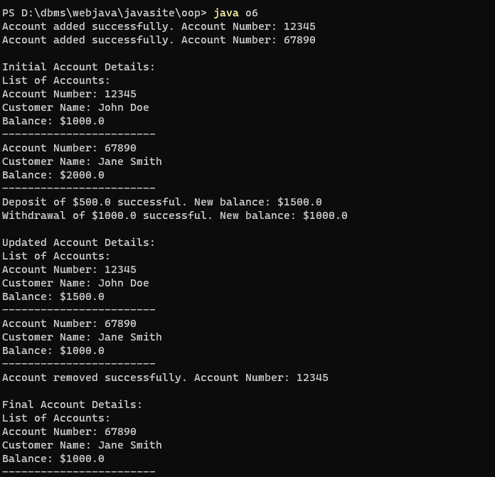
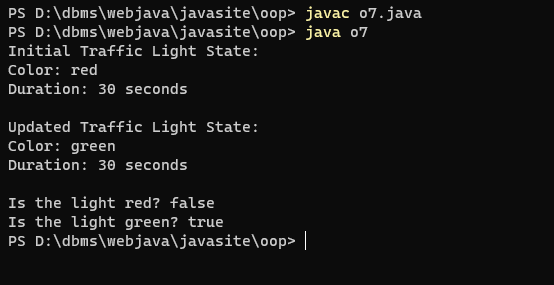
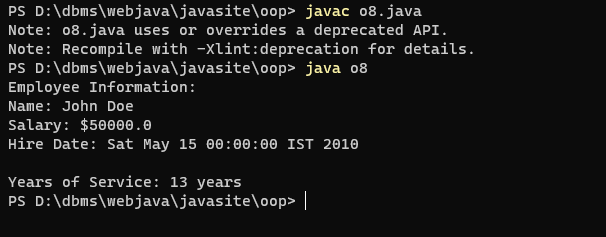
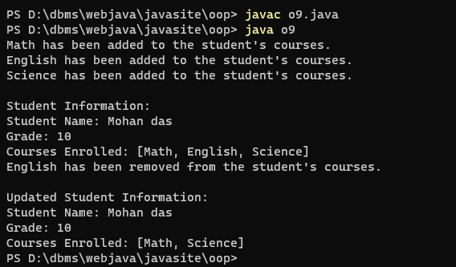

prog.no 1 Write a Java program to create a class called "Person" with a name and age attribute. Create two instances of the "Person" class, set their attributes using the constructor, and print their name and age.
output

prog.no 2. Write a Java program to create a class called "Dog" with a name and breed attribute. Create two instances of the "Dog" class, set their attributes using the constructor and modify the attributes using the setter methods and print the updated values.
output

prog.no 3. Write a Java program to create a class called "Rectangle" with width and height attributes. Calculate the area and perimeter of the rectangle.
output

prog.no 4. Write a Java program to create a class called "Circle" with a radius attribute. You can access and modify this attribute. Calculate the area and circumference of the circle.
output

prog.no 5. Write a Java program to create a class called "Book" with attributes for title, author, and ISBN, and methods to add and remove books from a collection.
output

prog.no 6. Write a Java program to create a class called "Employee" with a name, job title, and salary attributes, and methods to calculate and update salary.
output

prog.no 7. Write a Java program to create a class called "Bank" with a collection of accounts and methods to add and remove accounts, and to deposit and withdraw money. Also define a class called "Account" to maintain account details of a particular customer.
output

prog.no 8. Write a Java program to create class called "TrafficLight" with attributes for color and duration, and methods to change the color and check for red or green.
output

prog.no 9. Write a Java program to create a class called "Employee" with a name, salary, and hire date attributes, and a method to calculate years of service.
output

prog.no 10. Write a Java program to create a class called "Student" with a name, grade, and courses attributes, and methods to add and remove courses.